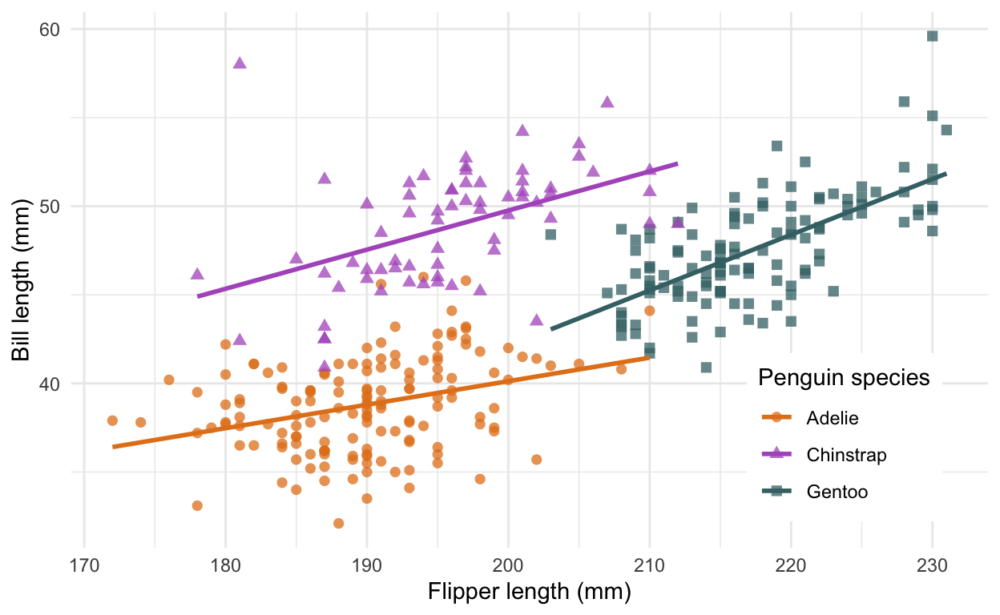

What is scope?
New vocabulary
- scope Which objects (data, functions, etc) are visible to a code block
- immutability An immutable variable cannot be changed
Scope is a powerful tool for breaking down complex ideas into manageable chunks, but it’s also a common source of frustration for coders new to writing functions. In this lesson you’ll learn what variables are visible to a function (scope) and how R uses immutability to reduce errors.
Bills and flippers
For this lesson we’re going to examine a morphological dataset of penguins from the Palmer Station Long Term Ecological Research site in Antarctica. For more information on the R package containing this data set (and the source of the excellent penguin illustration), see https://allisonhorst.github.io/palmerpenguins/.

Illustrations of Chinstrap, Gentoo, and Adélie penguins
ggplot(drop_na(penguins, flipper_length_mm, bill_length_mm),
aes(flipper_length_mm, bill_length_mm, color = species)) +
geom_point(aes(shape = species), size = 2, alpha = 0.75) +
geom_smooth(method = "lm", formula = y ~ x, se = FALSE) +
labs(x = "Flipper length (mm)",
y = "Bill length (mm)",
color = "Penguin species",
shape = "Penguin species") +
scale_color_manual(values = c(Adelie = "#E4811E",
Chinstrap = "#B05CC5",
Gentoo = "#417175")) +
theme_minimal() +
theme(legend.box.background = element_rect(color = NA, fill = "white"),
legend.justification = c(1, 0),
legend.position = c(0.95, 0.05))
Parameters as placeholders
Within the scope of a function, parameters take on the value passed in the function call. So the value visible within the function will change depending on how you call it. This may seem obvious, but it’s easy to forget and a common source of bugs! Consider the following.
ith_bill <- function(i) {
bills <- sort(penguins$bill_length_mm, decreasing = TRUE)
bills[i]
}
ith_bill(1)## [1] 59.6ith_bill(5)## [1] 55.1ith_bill() returns the ith largest bill, where i is a parameter. So when you call ith_bill(1) you get the largest bill and ith_bill(5) is the 5th largest bill. But how about this?
i <- 2
ith_bill(3)This is an example of scope. The function ith_bill() sees i as whatever we pass to it when we call it, not whatever we did outside of it. Here we saw it with a number, but it’s also true of more complex objects. Let’s modify ith_bill() to take a subset of the penguins data frame as a parameter to demonstrate. Fill in the “???” below to find the largest Adelie penguin bill.
ith_bill <- function(i, penguin_subset) {
bills <- sort(penguin_subset$bill_length_mm, decreasing = TRUE)
bills[i]
}
ith_bill(1, filter(penguins, species == "???"))